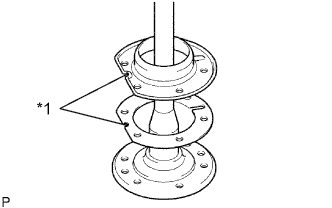
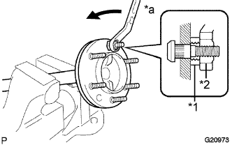
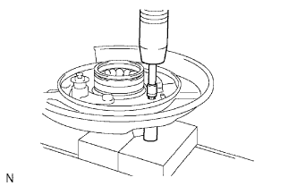
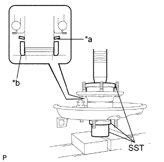
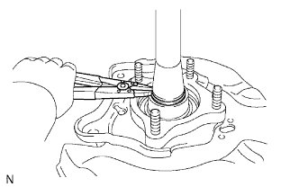

REAR AXLE SHAFT > REASSEMBLY |
| 1. INSTALL BRAKE DRUM OIL DEFLECTOR LH |
|  |
Install a new deflector gasket and deflector to the rear axle shaft.
| *1 | Oil Drain Holes |
Insert 6 new hub bolts.
|  |
Temporarily install a washer and nut to each hub bolt as shown in the illustration.
| *1 | Washer |
| *2 | Nut |
| *a | Turn |
Install the hub bolts by tightening each nut.
Remove the washer and nut from each hub bolt.
| 2. INSTALL REAR AXLE HUB AND BEARING ASSEMBLY LH |
Install a new rear axle hub and bearing to the parking brake plate.
|  |
Using 2 socket wrenches and a press, press in the 4 housing bolts.
| 3. INSTALL REAR AXLE SHAFT LH |
|  |
Install a new washer and a new retainer to the axle hub as shown in the illustration.
| *a | Tapered Surface |
| *b | Chamfered Surface |
Using SST and a press, press in the rear axle shaft.
| 4. INSTALL REAR AXLE SHAFT SNAP RING LH |
|  |
Using snap ring expander, install a new rear axle shaft snap ring.